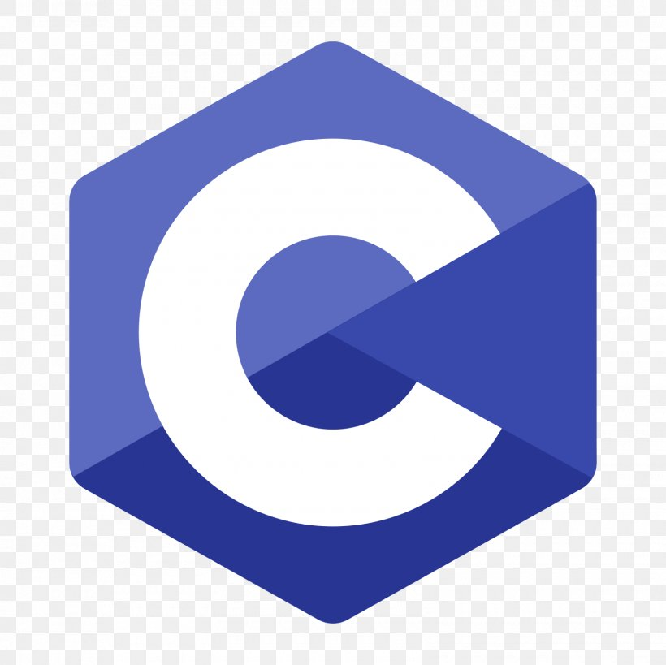

Programming languages
During my education so far, I have encountered numerous programming languages, some in school or college and some on my own. Naturally, I can't and won't claim that I am proficient in all of them, but I do have at least some amount of knowledge about all of them. The aforementioned programming languages are listed below together with my estimate on my level of proficiency in them.
-

C
Advanced
-

C++
Advanced
-

C#
Intermediate
-

Java
Intermediate
-

Python
Beginner
-
R
Beginner
-
SQL
Beginner